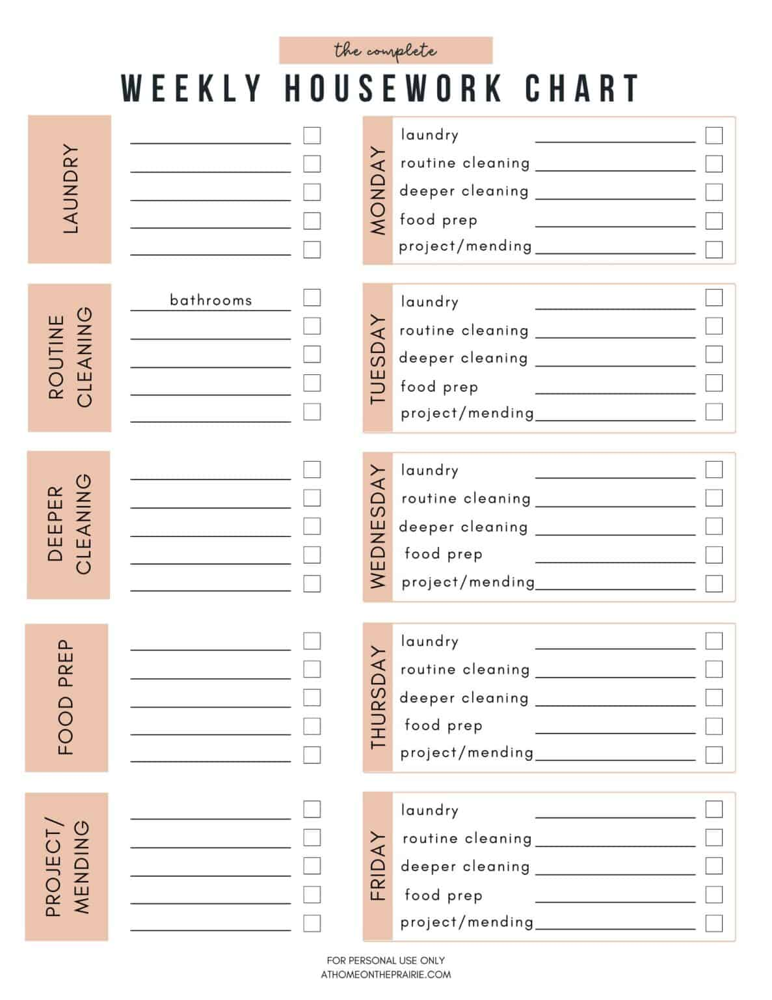

My name is Salma and I am an aspiring programmer. I recently graduated the university and was blessesd to have been introduced to the careerex program. I pray everyday to make the the most of it
On the 23rd and 24th of March, the first two classes were held. The first class talked about marking the attendance for classes and we were giving an introduction on how to set up visual studio code. We learnt how to access a folder from VSC and how to create an HTML document. The second class talked about html tags and how to setup your HTML document. We were shown the parts of an HTML document which are the head and the body. The head contains the title, links and meta tags while the body contains the elements of the document like the p tag for paragraphs, the heading tags which are h1 through to h6, the img tags for images and so on. We were also shown how to go about the assignments given to us. The classes were very impactful.

I am a hopeful and ambitious woman. I daydream of the woman I will one day become and I work towards that goal everyday. I fantasize of success, stability and being able to one day make an impact all while glorifying God.
To be honest this is a forced hobby. I make sure to read everyday.
I love watching movies. Just like reading, it feeds my imagination.

This is more like a habit. I grew up learning to keep the house clean and presentable.
